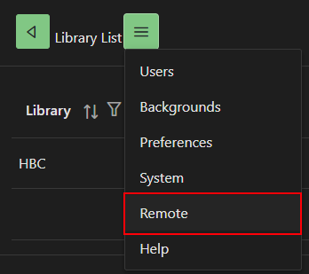
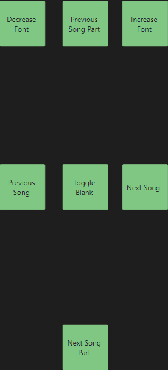

1.1.6.7 Highlights¶
- Added ability to add scripture between songs in a set

1.1.6.6 Highlights¶
- Added release notes
1.1.6.5 Highlights¶
-
Added remote control support for Projector slides.
-
To use this feature. Open your Projector slides for the set. On another device open the website. Open the menu and select Remote.

- Now you can control the Projector slides for the set from the remote control (which you'll typically control from a mobile phone)

- Note: Currently the remote control controls all projector instances on the account and is not limited to just your login.
1.1.6.4 Highlights¶
- Sort other and filters for songs and sets are kept when returning to song editor or set editor screen.
1.1.6.3 Highlights¶
- The full song list is cached to reduce network traffic. Bandwidth is only used when presenting a song or using the global search box